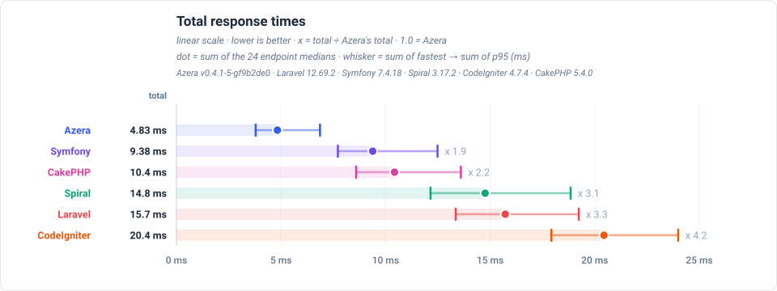
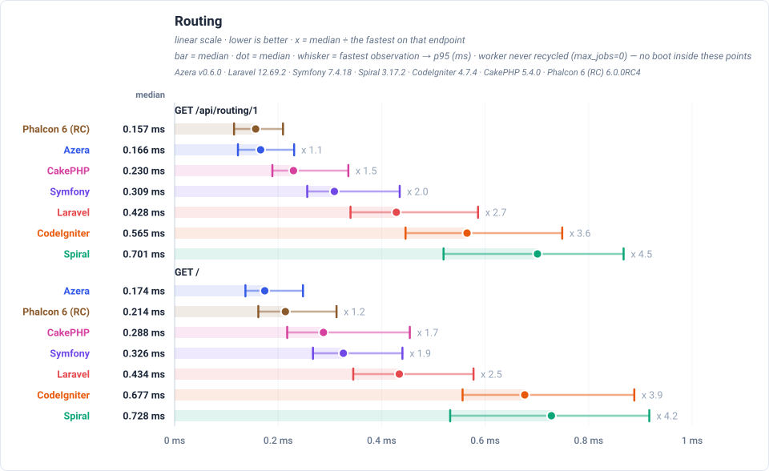
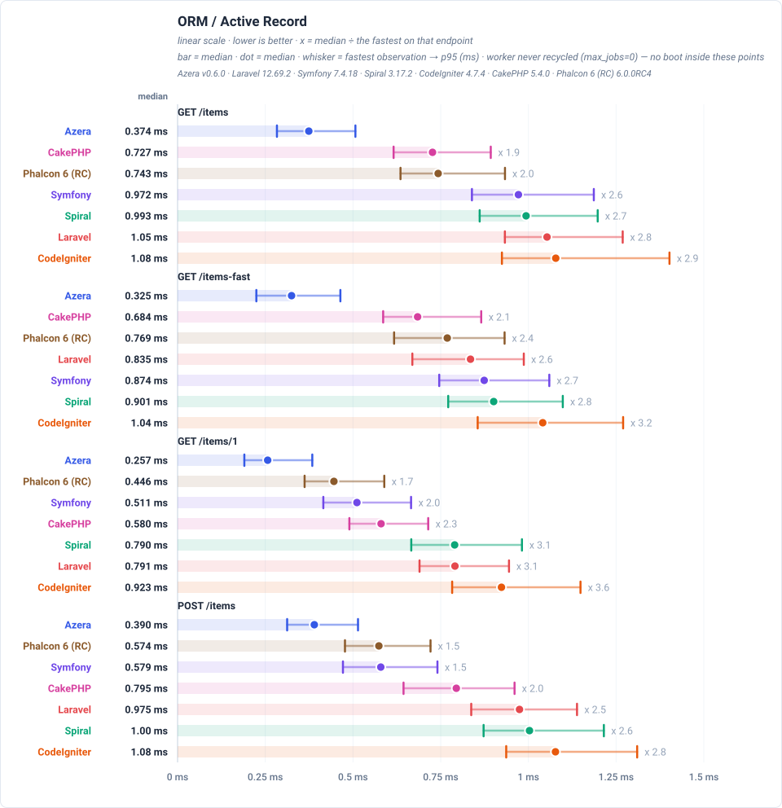

Feature benchmarks
GET /api/routing/1 — matches a typed route and dispatches it to a constant handler — no template and no database access — so the band measures route matching and dispatch and nothing else. The endpoint sits in a deep bucket of the route table, which is where a compiled index actually saves work. `/echo` is drawn beside it: the same constant handler behind a STATIC route, i.e. the floor that route matching is measured against — and, like any floor, it is mostly the SERVER rather than the framework. Measured 2026-11-24 with `temp/echo-ab.php` on the bench VM, the entire framework layer on `/echo` costs single-digit microseconds, inside rows that print two to three orders of magnitude more. A difference of a few microseconds there is below the run-to-run spread, so read `/echo` as the common floor and NOT as a comparison between entrants; the charts that separate frameworks are the ones with real work in them.

GET /items — loads one page of the 1,000 seeded rows through each framework's ORM / Active Record layer: 20 items plus a COUNT for the pagination total. The `-fast` band repeats that page with hydration switched off, so the cost of building one object per row can be read directly instead of inferred.

GET /api/items — serves the same page of items as a JSON response rather than HTML, which adds serialization to the ORM work. The `-fast` band repeats that response with hydration switched off, so serialization cost and hydration cost can be told apart.

Latency by endpoint (ms, median — lower is better) — the worker is never recycled (max_jobs=0), so each number is the measured request with no boot in it
| Request | Workload | Azera | Laravel | Symfony | Spiral | CodeIgniter | CakePHP | Phalcon 6 (RC) |
|---|---|---|---|---|---|---|---|---|
GET /api/routing/1 | no DB — typed route + constant body (routing only) | 0.166 | 0.428 | 0.309 | 0.701 | 0.565 | 0.230 | 0.157 |
GET / | no DB — routing + template only | 0.174 | 0.434 | 0.326 | 0.728 | 0.677 | 0.288 | 0.214 |
GET /echo | no DB — static route, constant body (throughput floor) | 0.156 ≈ | 0.352 | 0.275 | 0.714 | 0.556 | 0.215 | 0.155 |
GET /items | 20 of 1000 items (page 1, + COUNT) | 0.374 | 1.05 | 0.972 | 0.993 | 1.08 | 0.727 | 0.743 |
GET /items-fast | 20 of 1000 items (page 1, + COUNT), hydrated rows not built | 0.325 | 0.835 | 0.874 | 0.901 | 1.04 | 0.684 | 0.769 |
GET /items/1 | 1 item by id | 0.257 | 0.791 | 0.511 | 0.790 | 0.923 | 0.580 | 0.446 |
POST /items | 1 row upserted (sentinel #999999) | 0.390 | 0.975 | 0.579 | 1.00 | 1.08 | 0.795 | 0.574 |
GET /items-qb | 20 of 1000 items (page 1, + COUNT) | 0.309 | 0.774 | 0.566 | 0.795 | 0.995 | 0.566 | 0.446 |
GET /items-qb/1 | 1 item by id | 0.210 | 0.617 | 0.437 | 0.721 | 0.905 | 0.481 | 0.269 |
POST /items-qb | 1 row upserted (sentinel #999997) | 0.245 | 0.736 | 0.483 | 0.817 | 1.13 | 0.593 | 0.328 |
GET /api/items | 20 of 1000 items as JSON | 0.233 | 0.899 | 0.592 | 0.839 | 0.896 | 0.491 | 0.322 |
GET /api/items-fast | 20 of 1000 items as JSON, rows not hydrated | 0.207 | 0.623 | 0.499 | 0.740 | 0.866 | 0.461 | 0.347 |
GET /api/items/1 | 1 item by id as JSON | 0.189 | 0.701 | 0.443 | 0.745 | 0.824 | 0.487 | 0.289 |
POST /api/items | 1 row upserted (sentinel #999998) | 0.220 | 0.810 | 0.507 | 0.948 | 0.911 | 0.628 | 0.408 |
GET /features/aop | 1 row upserted (sentinel #888800) | 0.211 | 0.592 | 0.384 | 0.826 | 0.953 | 0.402 | — |
GET /features/aop-direct | 1 row upserted (sentinel #888800) | 0.208 ≈ | 0.580 | 0.376 | 0.804 | 0.952 | 0.401 | 0.204 |
GET /features/cache | COUNT(*) of 1000 rows, cached 10s (miss = query) | 0.161 | 0.457 | 0.289 | 0.665 | 0.619 | 0.232 | 0.163 ≈ |
GET /features/log | no DB — buffered log handlers | 0.163 | 0.412 | 0.289 | 0.663 | 0.625 | 0.223 | 0.165 ≈ |
GET /features/retry | no DB — retry policy | 0.162 ≈ | 0.427 | 0.302 | 0.686 | 0.619 | 0.224 | 0.161 |
GET /features/pipeline | no DB — middleware pipeline | 0.163 | 0.409 | 0.296 | 0.669 | 0.617 | 0.228 | 0.166 ≈ |
GET /features/db-events | 1 row upserted (sentinel #888800) + COUNT(*), events collected | 0.228 | 0.688 | 0.554 | 0.937 | 1.01 | 0.552 | 0.220 |
GET /features/events | no DB — in-process listeners | 0.212 | 0.591 | 0.378 | 0.806 | 0.963 | 0.444 | 0.745 |
GET /features/validation | no DB — validator run | 0.168 | 1.14 | 0.474 | 0.728 | 0.907 | 0.386 | 0.189 |
GET /features/config | no DB — config lookup | 0.160 | 0.513 | 0.290 | 0.668 | 0.626 | 0.224 | 0.161 ≈ |
GET /features/request-scoped | no DB — scoped service resolve | 0.154 | 0.510 | 0.287 | 0.685 | 0.616 | 0.222 | 0.156 ≈ |
GET /features/rate-limit | no DB — cache-backed limiter | 0.158 | 0.548 | 0.303 | 0.689 | 0.626 | 0.227 | 0.159 ≈ |
Server floor — real RoadRunner over loopback: a bare resident worker that renders a fixed string (floor-rr) measures the IPC + server floor every row below also pays. Only differences larger than this floor are framework differences.
Full comparison
This page is a summary. The complete report, with every feature chart and the endpoint table for all six frameworks, is published at: